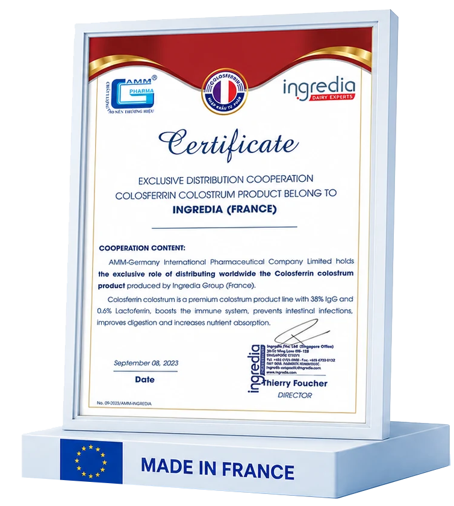

32.347 m²Diện tích nhà máy tại KCN Đồng Văn I
AMM Germany Nutrition
Nền tảng khoa học và công nghệ cho những giải pháp dinh dưỡng vươn xa
AMM nghiên cứu, sản xuất và đồng hành cùng các đối tác trong hành trình phát triển những sản phẩm dinh dưỡng chất lượng, ứng dụng công nghệ hiện đại.
R&DOEM/ODMTetra PakISO 22000:2018
Về AMM
Từ nghiên cứu khoa học đến sản phẩm hoàn thiện
AMM – Germany Nutrition là đơn vị nghiên cứu, sản xuất và cung cấp các giải pháp dinh dưỡng khoa học ứng dụng công nghệ hiện đại.
Từ định hướng sản phẩm, nghiên cứu công thức, lựa chọn nguyên liệu đến sản xuất và kiểm soát chất lượng, AMM đồng hành cùng đối tác trong toàn bộ hành trình phát triển sản phẩm.
Không chỉ là một đơn vị gia công, AMM hướng tới vai trò đối tác chiến lược, cùng doanh nghiệp kiến tạo những sản phẩm có giá trị lâu dài trên thị trường.
Tìm hiểu về AMM →Năng lực qua những con số
308 tỷ đồngTổng vốn đầu tư dự án
50.000.000 lít/nămCông suất sữa nước
300 tấn/nămCông suất sữa bột
150 tấn/nămCông suất sản phẩm dinh dưỡng bổ sung
20 tỷ đồng/nămTổng hạn mức bảo hiểm; tối đa 6 tỷ đồng/vụ
Nghiên cứu và phát triển
Mỗi sản phẩm bắt đầu từ một nhu cầu dinh dưỡng thực tế
AMM chuyển hóa nhu cầu thị trường và định hướng kinh doanh của đối tác thành giải pháp có khả năng ứng dụng và thương mại hóa.
Nhu cầu thị trường
Nghiên cứu giải pháp
Phát triển công thức
Lựa chọn nguyên liệu
Sản xuất thử nghiệm
Kiểm nghiệm & đánh giá
Sản xuất thương mại
Hoàn thiện & bàn giao
Công nghệ và nhà máy
Công nghệ hiện đại hiện thực hóa những giá trị khoa học

Dây chuyền sữa bột
Sản xuất khép kín, kiểm soát tự động.

Dây chuyền sữa nước
Hệ thống Tetra Pak TBA 19, tiệt trùng UHT.

Công nghệ Tetra Pak
Kiểm soát vi sinh và duy trì chất lượng sản phẩm.

Thành tựu nổi bật
Thương hiệu số 1 Việt Nam 2025.
Khám phá AMM trong 90 giây
Flycam nhà máy, dây chuyền vận hành và đội ngũ chuyên môn.
Nguyên liệu và giải pháp dinh dưỡng
Nguồn nguyên liệu được lựa chọn trên cơ sở khoa học
AMM lựa chọn nguyên liệu dựa trên nguồn gốc, hồ sơ chất lượng, tính phù hợp với công thức và yêu cầu của từng nhóm sản phẩm.
Colosferrin® – Ingredia, Pháp
Bột sữa non được chuẩn hóa, có hồ sơ phân tích chất lượng theo từng lô. AMM hợp tác cùng Ingredia trong cung cấp và ứng dụng Colosferrin® vào các giải pháp dinh dưỡng tại Việt Nam.
IgG ≥ 38%
Lactoferrin ≥ 0,6%


Hệ thống chất lượng
Chất lượng được kiểm soát trong từng công đoạn
AMM áp dụng hệ thống quản lý chất lượng xuyên suốt, từ nguyên liệu đầu vào đến thành phẩm và hồ sơ truy xuất.
Tìm hiểu hệ thống chất lượng →Kiểm soát nguyên liệu đầu vào
Kiểm soát quá trình sản xuất
Kiểm nghiệm thành phẩm
Truy xuất và lưu mẫu
ISO
ISO 22000:2018Hệ thống quản lý an toàn thực phẩmVDA
Thành viên Hiệp hội Sữa Việt NamKết nối chuyên môn trong ngành sữaABIC
Bảo hiểm trách nhiệm sản phẩm20 tỷ đồng/năm; tối đa 6 tỷ đồng/vụGiải pháp hợp tác
Không chỉ sản xuất, AMM cùng đối tác phát triển giá trị dài hạn
AMM cung cấp giải pháp toàn diện, linh hoạt và đồng hành cùng đối tác từ ý tưởng đến sản phẩm hoàn chỉnh.
OEM/ODM
Sản xuất theo yêu cầu và định hướng riêng.
Nhãn hàng riêng
Đồng hành xây dựng thương hiệu và sản phẩm.
Sữa bột
Công thức đa dạng theo nhu cầu sử dụng.
Sữa nước
Dây chuyền hiện đại, chất lượng ổn định.
Tư vấn công thức
Nghiên cứu và phát triển công thức phù hợp.
Hồ sơ công bố
Hỗ trợ chuẩn bị hồ sơ sản phẩm.
Bao bì
Tư vấn quy cách và thiết kế bao bì.
1Trao đổi nhu cầu
2Tư vấn giải pháp
3Thử nghiệm & hồ sơ
4Sản xuất & bàn giao
Đối tác và dự án
Hợp tác tạo nên những giá trị vươn xa
AMM đồng hành cùng các đối tác trong và ngoài nước để nghiên cứu, phát triển và đưa ra thị trường những sản phẩm dinh dưỡng chất lượng.
Hệ sinh thái đối tác


Dự án hợp tác
Nghiên cứu và phát triển sản phẩm cùng đối tác
Phối hợp xây dựng định hướng, công thức và tiêu chí chất lượng cho từng dự án.
Case study
Premilac – Đồng hành từ công thức đến thành phẩm
AMM đồng hành cùng đối tác trong phát triển công thức, sản xuất và hoàn thiện sản phẩm.

Năng lực dự án
Linh hoạt cho nhiều định hướng sản phẩm
Năng lực sản xuất đáp ứng nhiều nhóm sản phẩm và quy mô hợp tác khác nhau.
Tin tức
Góc nhìn từ AMM
Cập nhật hoạt động nghiên cứu, công nghệ, hợp tác và vận hành nhà máy.
Nghiên cứu
Phát triển giải pháp dinh dưỡng từ nhu cầu thực tế
Kết nối nghiên cứu công thức, nguyên liệu và khả năng ứng dụng.
Công nghệ
Ứng dụng hệ thống Tetra Pak trong sản xuất
Tối ưu kiểm soát quy trình và tính ổn định của sản phẩm.
Hợp tác
Tăng cường nền tảng bảo vệ và hợp tác dài hạn
Bảo hiểm trách nhiệm sản phẩm góp phần củng cố cam kết chất lượng.
Nhà máy
Năng lực sản xuất phục vụ nhiều dự án dinh dưỡng
Hạ tầng và dây chuyền được tổ chức theo định hướng kiểm soát chất lượng.
Bạn đang tìm kiếm một đối tác phát triển sản phẩm dinh dưỡng?
Hãy chia sẻ ý tưởng và định hướng của bạn. AMM sẵn sàng đồng hành từ nghiên cứu đến sản xuất và hoàn thiện sản phẩm.